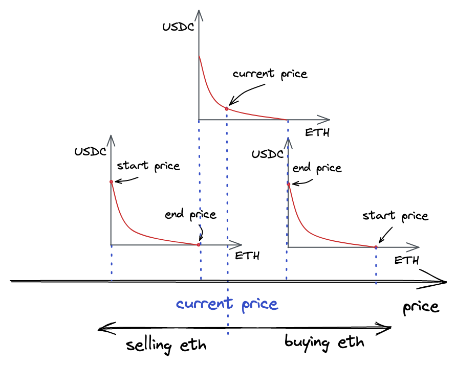
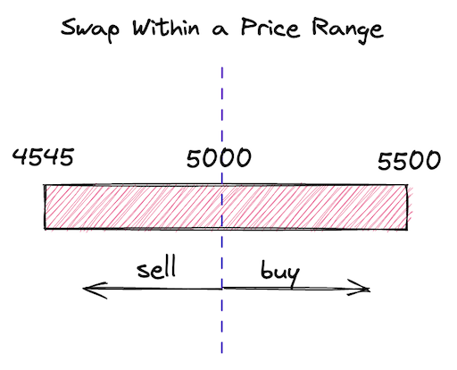
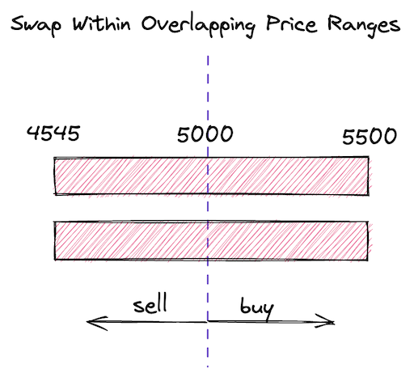
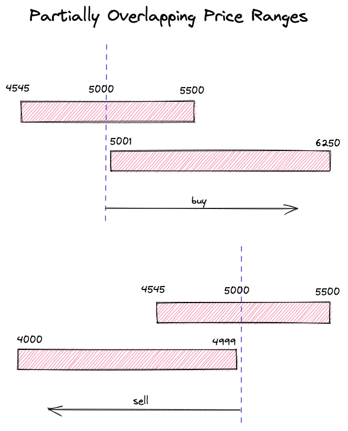

Cross-Tick Swaps
Cross-tick swaps are probably the most advanced feature of Uniswap V3. Luckily, we have already implemented almost everything we need to make cross-tick swaps. Let’s see how cross-tick swaps work before implementing them.
How Cross-Tick Swaps Work
A common Uniswap V3 pool is a pool with many overlapping (and outstanding) price ranges. Each pool tracks current and tick. When users swap tokens they move the current price and tick to the left or the right, depending on the swap direction. These movements are caused by tokens being added and removed from pools during swaps.
Pools also track (liquidity variable in our code), which is the total liquidity provided by all price ranges that include the current price. It’s expected that, during big price moves, the current price moves outside of price ranges. When this happens, such price ranges become inactive and their liquidity gets subtracted from . On the other hand, when the current price enters a price range, is increased and the price range gets activated.
Let’s analyze this illustration:

There are three price ranges on this image. The top one is the one currently engaged, it includes the current price. The liquidity of this price range is set to the liquidity state variable of the Pool contract.
If we buy all the ETH from the top price range, the price will increase and we’ll move to the right price range, which at this moment contains only ETH, not USDC. We might stop in this price range if there’s enough liquidity to satisfy our demand. In this case, the liquidity variable will contain only the liquidity provided by this price range. If we continue buying ETH and deplete the right price range, we’ll need another price range that’s to the right of this price range. If there are no more price ranges, we’ll have to stop, and our swap will be satisfied only partially.
If we buy all the USDC from the top price range (and sell ETH), the price will decrease and we’ll move to the left price range–at this moment it contains only USDC. If we deplete it, we’ll need another price range to the left of it.
The current price moves during swapping. It moves from one price range to another, but it must always stay within a price range–otherwise, trading is not possible.
Of course, price ranges can overlap, so, in practice, the transition between price ranges is seamless. And it’s not possible to hop over a gap–a swap would be completed partially. It’s also worth noting that, in the areas where price ranges overlap, price moves slower. This is because supply is higher in such areas and the effect of demand is lower (recall from the introduction that high demand with low supply increases the price).
Our current implementation doesn’t support such fluidity: we only allow swaps within one active price range. This is what we’re going to improve now.
Updating the computeSwapStep Function
In the swap function, we’re iterating over initialized ticks (that is, ticks with liquidity) to fill the amount the user has requested. In each iteration, we:
- find the next initialized tick using
tickBitmap.nextInitializedTickWithinOneWord; - swap in the range between the current price and the next initialized tick (using
SwapMath.computeSwapStep); - always expect that the current liquidity is enough to satisfy the swap (i.e. the price after a swap is between the current price and the next initialized tick).
But what happens if the third step is not true? We have this scenario covered in tests:
// test/UniswapV3Pool.t.sol
function testSwapBuyEthNotEnoughLiquidity() public {
...
uint256 swapAmount = 5300 ether;
...
vm.expectRevert(stdError.arithmeticError);
pool.swap(address(this), false, swapAmount, extra);
}
The “Arithmetic over/underflow” happens when the pool tries to send us more ether than it has. This error happens because, in our current implementation, we always expect that there’s enough liquidity to satisfy any swap:
// src/lib/SwapMath.sol
function computeSwapStep(...) {
...
sqrtPriceNextX96 = Math.getNextSqrtPriceFromInput(
sqrtPriceCurrentX96,
liquidity,
amountRemaining,
zeroForOne
);
amountIn = ...
amountOut = ...
}
To improve this, we need to consider several situations:
- when the range between the current and the next ticks has enough liquidity to fill
amountRemaining; - when the range doesn’t fill the entire
amountRemaining.
In the first case, the swap is done entirely within the range–this is the scenario we have implemented. In the second situation, we’ll consume the whole liquidity provided by the range and will move to the next range (if it exists). With this in mind, let’s rework computeSwapStep:
// src/lib/SwapMath.sol
function computeSwapStep(...) {
...
amountIn = zeroForOne
? Math.calcAmount0Delta(
sqrtPriceCurrentX96,
sqrtPriceTargetX96,
liquidity
)
: Math.calcAmount1Delta(
sqrtPriceCurrentX96,
sqrtPriceTargetX96,
liquidity
);
if (amountRemaining >= amountIn) sqrtPriceNextX96 = sqrtPriceTargetX96;
else
sqrtPriceNextX96 = Math.getNextSqrtPriceFromInput(
sqrtPriceCurrentX96,
liquidity,
amountRemaining,
zeroForOne
);
amountIn = Math.calcAmount0Delta(
sqrtPriceCurrentX96,
sqrtPriceNextX96,
liquidity
);
amountOut = Math.calcAmount1Delta(
sqrtPriceCurrentX96,
sqrtPriceNextX96,
liquidity
);
}
First, we calculate amountIn–the input amount the current range can satisfy. If it’s smaller than amountRemaining, we say that the current price range cannot fulfill the whole swap, thus the next is the upper/lower of the price range (in other words, we use the entire liquidity of the price range). If amountIn is greater than amountRemaining, we compute sqrtPriceNextX96–it’ll be a price within the current price range.
In the end, after figuring out the next price, we re-compute amountIn and compute amountOut within this shorter price range (we don’t consume the entire liquidity).
I hope this makes sense!
Updating the swap Function
Now, in the swap function, we need to handle the case we introduced in the previous part: when the swap price reaches a boundary of a price range. When this happens, we want to deactivate the price range we’re leaving and activate the next price range. We also want to start another iteration of the loop and try to find another tick with liquidity.
Before updating the loop, let’s save the second value returned by the tickBitmap.nextInitializedTickWithinOneWord() call into step.initialized:
(step.nextTick, step.initialized) = tickBitmap.nextInitializedTickWithinOneWord(
state.tick,
1,
zeroForOne
);
(In the previous milestone we stored only step.nextTick.)
Knowing if the next tick is initialized or not will help us save some gas in situations when there’s no initialized tick in the current word in the ticks bitmap.
Now, here’s what we need to add to the end of the loop:
if (state.sqrtPriceX96 == step.sqrtPriceNextX96) {
if (step.initialized) {
int128 liquidityDelta = ticks.cross(step.nextTick);
if (zeroForOne) liquidityDelta = -liquidityDelta;
state.liquidity = LiquidityMath.addLiquidity(
state.liquidity,
liquidityDelta
);
if (state.liquidity == 0) revert NotEnoughLiquidity();
}
state.tick = zeroForOne ? step.nextTick - 1 : step.nextTick;
} else {
state.tick = TickMath.getTickAtSqrtRatio(state.sqrtPriceX96);
}
The second branch is what we had before–it handles the case when the current price stays within the range. So let’s focus on the first one.
Here, we’re updating the current liquidity, but only if the next tick is initialized (if it’s not, we skip adding 0 to the liquidity to save gas).
state.sqrtPriceX96 is the new current price, i.e. the price that will be set after the current swap; step.sqrtPriceNextX96 is the price at the next initialized tick. If these are equal, we have reached a price range boundary. As explained above, when this happens, we want to update (add or remove liquidity) and continue the swap using the boundary tick as the current tick.
By convention, crossing a tick means crossing it from left to right. Thus, crossing lower ticks always adds liquidity, and crossing upper ticks always removes it. However, when zeroForOne is true, we negate the sign: when the price goes down (token is being sold), upper ticks add liquidity and lower ticks remove it.
When updating state.tick, if the price moves down (zeroForOne is true), we need to subtract 1 to step out of the price range. When moving up (zeroForOne is false), the current tick is always excluded in TickBitmap.nextInitializedTickWithinOneWord.
Another small, but very important, change that we need to make is to update when crossing a tick. We do this after the loop:
if (liquidity_ != state.liquidity) liquidity = state.liquidity;
Within the loop, we update state.liquidity multiple times when entering/leaving price ranges. After a swap, we need to update the global for it to reflect the liquidity available at the new current price. Also, the reason why we only update the global variable when finishing the swap is gas consumption optimization, since writing to the storage of a contract is an expensive operation.
Liquidity Tracking and Ticks Crossing
Let’s now look at the updated Tick library.
The first change is in the Tick.Info structure: we now have two variables to track tick liquidity:
struct Info {
bool initialized;
// total liquidity at tick
uint128 liquidityGross;
// amount of liquidity added or subtracted when tick is crossed
int128 liquidityNet;
}
liquidityGross tracks the absolute liquidity amount of a tick. It’s needed to find if a tick was flipped or not. liquidityNet, on the other hand, is a signed integer–it tracks the amount of liquidity added (in case of lower tick) or removed (in case of upper tick) when a tick is crossed.
liquidityNet is set in the update function:
function update(
mapping(int24 => Tick.Info) storage self,
int24 tick,
int128 liquidityDelta,
bool upper
) internal returns (bool flipped) {
...
tickInfo.liquidityNet = upper
? int128(int256(tickInfo.liquidityNet) - liquidityDelta)
: int128(int256(tickInfo.liquidityNet) + liquidityDelta);
}
The cross function we saw above simply returns liquidityNet (it’ll get more complicated after we introduce new features in later milestones):
function cross(mapping(int24 => Tick.Info) storage self, int24 tick)
internal
view
returns (int128 liquidityDelta)
{
Tick.Info storage info = self[tick];
liquidityDelta = info.liquidityNet;
}
Testing
Let’s review different liquidity setups and test them to ensure our pool implementation can handle them correctly.
One Price Range

This is the scenario we had earlier. After we have updated the code, we need to ensure old functionality keeps working correctly.
For brevity, I’ll show only the most important parts of the tests. You can find full tests in the code repo.
- When buying ETH:
function testBuyETHOnePriceRange() public { LiquidityRange[] memory liquidity = new LiquidityRange[](1); liquidity[0] = liquidityRange(4545, 5500, 1 ether, 5000 ether, 5000); ... (int256 expectedAmount0Delta, int256 expectedAmount1Delta) = ( -0.008396874645169943 ether, 42 ether ); assertSwapState( ExpectedStateAfterSwap({ ... sqrtPriceX96: 5604415652688968742392013927525, // 5003.8180249710795 tick: 85183, currentLiquidity: liquidity[0].amount }) ); } - When buying USDC:
function testBuyUSDCOnePriceRange() public { LiquidityRange[] memory liquidity = new LiquidityRange[](1); liquidity[0] = liquidityRange(4545, 5500, 1 ether, 5000 ether, 5000); ... (int256 expectedAmount0Delta, int256 expectedAmount1Delta) = ( 0.01337 ether, -66.807123823853842027 ether ); assertSwapState( ExpectedStateAfterSwap({ ... sqrtPriceX96: 5598737223630966236662554421688, // 4993.683362269102 tick: 85163, currentLiquidity: liquidity[0].amount }) ); }
In both of these scenarios we buy a small amount of ETH or USDC–it needs to be small enough for the price to not leave the only price range we created. Key values after swapping is done:
sqrtPriceX96is slightly above or below the initial price and stays within the price range;currentLiquidityremains unchanged.
Multiple Identical and Overlapping Price Ranges

-
When buying ETH:
function testBuyETHTwoEqualPriceRanges() public { LiquidityRange memory range = liquidityRange( 4545, 5500, 1 ether, 5000 ether, 5000 ); LiquidityRange[] memory liquidity = new LiquidityRange[](2); liquidity[0] = range; liquidity[1] = range; ... (int256 expectedAmount0Delta, int256 expectedAmount1Delta) = ( -0.008398516982770993 ether, 42 ether ); assertSwapState( ExpectedStateAfterSwap({ ... sqrtPriceX96: 5603319704133145322707074461607, // 5001.861214026131 tick: 85179, currentLiquidity: liquidity[0].amount + liquidity[1].amount }) ); } -
When buying USDC:
function testBuyUSDCTwoEqualPriceRanges() public { LiquidityRange memory range = liquidityRange( 4545, 5500, 1 ether, 5000 ether, 5000 ); LiquidityRange[] memory liquidity = new LiquidityRange[](2); liquidity[0] = range; liquidity[1] = range; ... (int256 expectedAmount0Delta, int256 expectedAmount1Delta) = ( 0.01337 ether, -66.827918929906650442 ether ); assertSwapState( ExpectedStateAfterSwap({ ... sqrtPriceX96: 5600479946976371527693873969480, // 4996.792621611429 tick: 85169, currentLiquidity: liquidity[0].amount + liquidity[1].amount }) ); }
This scenario is similar to the previous one but this time we create two identical price ranges. Since those are fully overlapping price ranges, they in fact act as one price range with a higher amount of liquidity. Thus, the price changes slower than in the previous scenario. Also, we get slightly more tokens thanks to deeper liquidity.
Consecutive Price Ranges

- When buying ETH:
function testBuyETHConsecutivePriceRanges() public { LiquidityRange[] memory liquidity = new LiquidityRange[](2); liquidity[0] = liquidityRange(4545, 5500, 1 ether, 5000 ether, 5000); liquidity[1] = liquidityRange(5500, 6250, 1 ether, 5000 ether, 5000); ... (int256 expectedAmount0Delta, int256 expectedAmount1Delta) = ( -1.820694594787485635 ether, 10000 ether ); assertSwapState( ExpectedStateAfterSwap({ ... sqrtPriceX96: 6190476002219365604851182401841, // 6105.045728033458 tick: 87173, currentLiquidity: liquidity[1].amount }) ); } - When buying USDC:
function testBuyUSDCConsecutivePriceRanges() public { LiquidityRange[] memory liquidity = new LiquidityRange[](2); liquidity[0] = liquidityRange(4545, 5500, 1 ether, 5000 ether, 5000); liquidity[1] = liquidityRange(4000, 4545, 1 ether, 5000 ether, 5000); ... (int256 expectedAmount0Delta, int256 expectedAmount1Delta) = ( 2 ether, -9103.264925902176327184 ether ); assertSwapState( ExpectedStateAfterSwap({ ... sqrtPriceX96: 5069962753257045266417033265661, // 4094.9666586581643 tick: 83179, currentLiquidity: liquidity[1].amount }) ); }
In these scenarios, we make big swaps that cause the price to move outside of a price range. As a result, the second price range gets activated and provides enough liquidity to satisfy the swap. In both scenarios, we can see that the price lands outside of the current price range and that the price range gets deactivated (the current liquidity equals the liquidity of the second price range).
Partially Overlapping Price Ranges

-
When buying ETH:
function testBuyETHPartiallyOverlappingPriceRanges() public { LiquidityRange[] memory liquidity = new LiquidityRange[](2); liquidity[0] = liquidityRange(4545, 5500, 1 ether, 5000 ether, 5000); liquidity[1] = liquidityRange(5001, 6250, 1 ether, 5000 ether, 5000); ... (int256 expectedAmount0Delta, int256 expectedAmount1Delta) = ( -1.864220641170389178 ether, 10000 ether ); assertSwapState( ExpectedStateAfterSwap({ ... sqrtPriceX96: 6165345094827913637987008642386, // 6055.578153852725 tick: 87091, currentLiquidity: liquidity[1].amount }) ); } -
When buying USDC:
function testBuyUSDCPartiallyOverlappingPriceRanges() public { LiquidityRange[] memory liquidity = new LiquidityRange[](2); liquidity[0] = liquidityRange(4545, 5500, 1 ether, 5000 ether, 5000); liquidity[1] = liquidityRange(4000, 4999, 1 ether, 5000 ether, 5000); ... (int256 expectedAmount0Delta, int256 expectedAmount1Delta) = ( 2 ether, -9321.077831210790476918 ether ); assertSwapState( ExpectedStateAfterSwap({ ... sqrtPriceX96: 5090915820491052794734777344590, // 4128.883835866256 tick: 83261, currentLiquidity: liquidity[1].amount }) ); }
This is a variation of the previous scenario, but this time the price ranges are partially overlapping. In the areas where the price ranges overlap, there’s deeper liquidity, which makes the price movements slower. This is similar to providing more liquidity into the overlapping ranges.
Also notice that, in both swaps, we got more tokens than in the “Consecutive Price Ranges” scenarios–this is again due to deeper liquidity in the overlapping ranges.